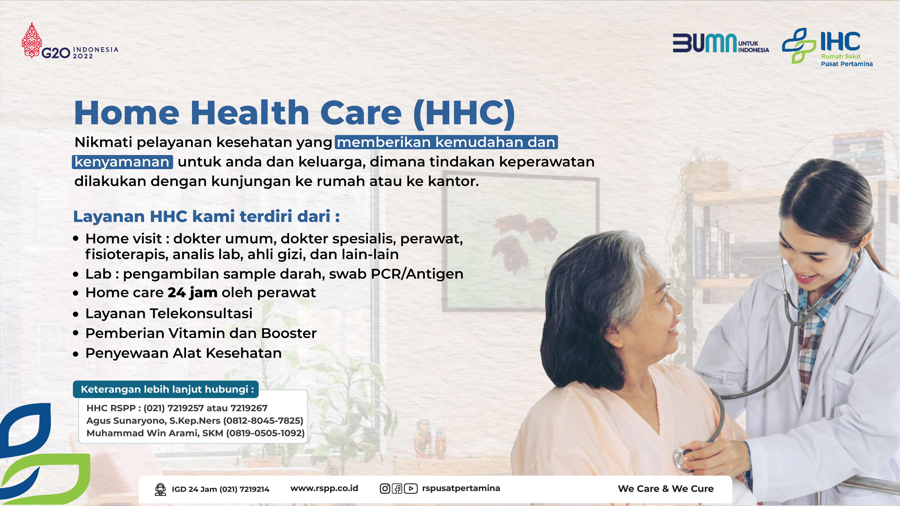

Rawat Jalan

Akupunktur
Didalam mendukung unit layanan lain, unit akupunktur kami
mengaplikasikan beragam metode dan teknik, termasuk
Ultrapuncture dengan menggunakan bantuan alat ultrasound untuk
menghilangkan rasa sakit, Cosmetic acupuncture (kosmetik),
Management of obesity (problem kegendutan), Infertility
(kemandulan), Degrenerative diseases (akibat proses penuaan).
Kesehatan Anak
Pancaran kasih sayang dan kelembutan nan bersahaja dari para
ahli medis dan perawatan kami akan senantiasa membias pada
setiap pengangan yang kami berikan pada buah hati Anda. Kami
juga dilengkapi dengan On site Ultrasonografi yang di desain
khusus untuk anak.
Honey🪢, [4/16/2023 11:43 PM]
Andrologi
Bagian Andrologi kami memberikan layanan khusus untuk pasangan
yang mengalami masalah 'infertilitas', disfungsi seksual,
kelambatan perkembangan pada alat kemaluan, serta pemberian
konseling pra nikah dan andropause. Ahli andrologi kami akan
membantu masalah anda dengan perhatian dan empati mendalam.
Bedah Jantung, Thorax dan Pembuluh Darah
Penatalaksanaan ketidaknormalan pada vascular saat ini sangat
berkembang, dengan ditunjang laboratorium vascular non
invasive. Sekian banyak Pasien kami telah terbukti sukses
menjalani pembedahan vascular dan dalam waktu dekat RSPP akan
segera membuka layanan Bedah Bypass Jantung.
Bedah Plastik
Kami menolong pasien-pasien dari berbagai usia dengan masalah
kalainan bawaan lahir, kerusakan anggota tubuh akibat
kecelakaan, luka bakar dan bagi siapa saja yang menginginkan
penampilan estetis lebih baik. Bedah plastik juga kami lakukan
bila diperlukan pengembalian proporsi tubuh yang normal untuk
memperbaiki penampilan, rasa percaya diri dan meningkatkan
fungsi secara fisiologis.
Bedah Saraf
Rumah Sakit kami memiliki pakar-pakar dengan reputasi sangat
baik untuk menangani pembedahan pada trauma kepala, tulang
belakang, tumor atau kelainan-kelainan pad system persyarafan,
dan memiliki perpaduan yang luar biasa antara reputasi para
pakar dan perlatan medis yang mutakhir seperti microsurgery,
perwatan laser dan neuro endoscopy.
Bedah Tulang (Orthopaedi & Traumatologi)
Mempertahankan, mengembalikan dan memperbaiki fungsi system
musculoskeletal / rangka dan pergerakan tubuh. Layanan
unggulan di klinik kami adalah 3 O'Clinic (Osteoarthritis,
Osteoporosis & Obesitas); Klinik Traumatologi & Pertolongan
Emergensi; Minimally Invasive Spinal Surgery; Micro Surgery;
Arthroscopic Surgery; Arthroplasty.
Honey🪢, [4/16/2023 11:43 PM]
Bedah Tumor (Onkologi)
Kanker adalah penyakit yang dapat berakibat fatal bila tidak
tertangani dengan baik. Dengan deteksi dini dan penanganan
tepat sepertiga kasus kanker dapat diobati. Pasien selayaknya
didampingi pada masa-masa sulit melawan penyakit kanker yang
diderita, begitupun kami mengupayakan hal terbaik dari
pengobatan dan perawatan komprehensif kami.
Bedah Jantung, Thorax dan Pembuluh Darah
Penatalaksanaan ketidaknormalan pada vascular saat ini sangat
berkembang, dengan ditunjang laboratorium vascular non
invasive. Sekian banyak Pasien kami telah terbukti sukses
menjalani pembedahan vascular dan dalam waktu dekat RSPP akan
segera membuka layanan Bedah Bypass Jantung.
Bedah Umum
Dalam bidang bedah umum kami menerapkan teknik pembedahan
invasive minimal seperti laparoscopic melalui suatu sayatan
kecil pada dinding perut colesistektomi laparoscopy dengan
teknologi ini proses penyembuhan dan perawatan rumah sakit
yang lama hanya akan tinggal menjadi kenangan.
Bedah Urologi
Dibagian urologi kami menangani ribuan kasus batu ginjal
setiap tahunnya. Diantaranya beragam metode pengobatan
mutakhir kami memiliki teknik penghancur bantu ginjal dengan
gelombang kejut atau ESWL dan Holmium YAG Laser. Teknik
pengobatan tanpa pisau bedah ini menghasilkan batas aman yang
lebih luas, sehingga rasa nyeri minimal serta pemulihan yang
cepat.
Instalasi Gigi & Mulut
Masalah lain yang sering kami tangani adalah gangguan gigi dan
mulut untuk anak dan dewasa, dan apapun masalah kesehatan gigi
& mulut Anda, Kami memberikan solusi sempurna bagi Anda.
Sentuhan terampil dari para ahli kami akan membuat Anda nyaman
serta mengembalikan senyum ceria dan rasa percaya diri Anda.
Honey🪢, [4/16/2023 11:43 PM]
Jantung & Pembuluh Darah
Penata laksanaan diagnosis penyakit-penyakit pembuluh darah
juga telah mengalami kemajuan besar dengan adanya laboratorium
vasculer non infasif. Berpijak dari hasil-hasil pemeriksaan
ini telah sekian banyak pasien yang sukses menjalani operasi
lintas jantung koroner dan penggantian katup jantung. Seiring
dengan meningkatnya insiden penyakit jantung dewasa ini maka
kebutuhan sarana diagnosis non infasif yang akurat dibagian
kardiologi sangat mutlak diperlukan. Untuk anda tersedia tes
pembebanan jantung atau treadmill test, abpm, ambulatory blood
pressure monitoring yang merekam data-data tekanan darah
selama jangka waktu tertentu dalam angka dan grafik. Holter
monitoring yang memantau irama jantung dalam rekaman EKG
selama 24 sampai 28 jam. Dan teknologi terkini Echocardiografi
3 dimensi. Para dokter ahli kamipun melakukan
tindakan-tindakan infasif seperti kateterisasi jantung
pelebaran pembuluh darah coroner dengan metode balon dan
pemasangan sten.
Kebidanan & Kandungan
Dengan fasilitas dan teknologi modern, dokter ahli
berkualitas, perawat dan petugas yang penuh perhatian,
dilengkapi dengan meja periksa ginekologi, USG 4 dimensi,
Kolposkopi dan lain-lain, dijamin melahirka buah hati di rumah
sakit kami akan menjadi pengalaman yang sangat indah dalam
hidup Anda.
Kesehatan Jiwa
Kami memberikan konsultasi maupun terapi kejiwaan pada Pasien
di segala usia, konseling pra nikah dan terapi Pasien dengan
penyalahgunaan obat. Beberapa tes profil kepribadian
terkinipun tersedia untuk pengembangan pribadi maupun karier
yang lebih baik. Layanan klinik ini dapat melakukan
pemeriksaan daya fungsi otak, salah satunya perlu dilakukan
pada para pekerja yang sibuk dan memiliki stressor yang
tinggi. Sedangkan pemeriksaan profil kepribadian dilakukan
terutama untuk para calon pekerja dari berbagai tingkatan
(dari buruh kasar sampai eksekutif).
Kulit & Kelamin
Dengan teknologi terdepan, membuat unit kulit & kelamin kami
adalah tempat tepat bagi solusi permasalahan kulit Anda. Salah
satunya melalui prosedur 'mikrodermabrasi' dapat mengembalikan
kecerahan & kecantikan kulit Anda. Mikrodermabrasi merupakan
perpaduan teknologi tinggi dan pengetahuan dari para dokter
kulit dan ahli perawatan kulit. Metode ini paling disukai
untuk perawatan kulit masa kini, dan cara aman untuk merawat
kulit agar lebih sehat dan terlihat lebih muda.
Honey🪢, [4/16/2023 11:43 PM]
Mata
Didukung oleh teknologi dan fasilitas terdepan, spesialis
kesehatan mata kami menawarkan berbagai prosedur tindakan
operatif maupun no operatif bagi kesehatan dan keindahan mata
Anda.